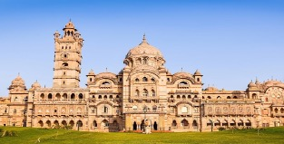
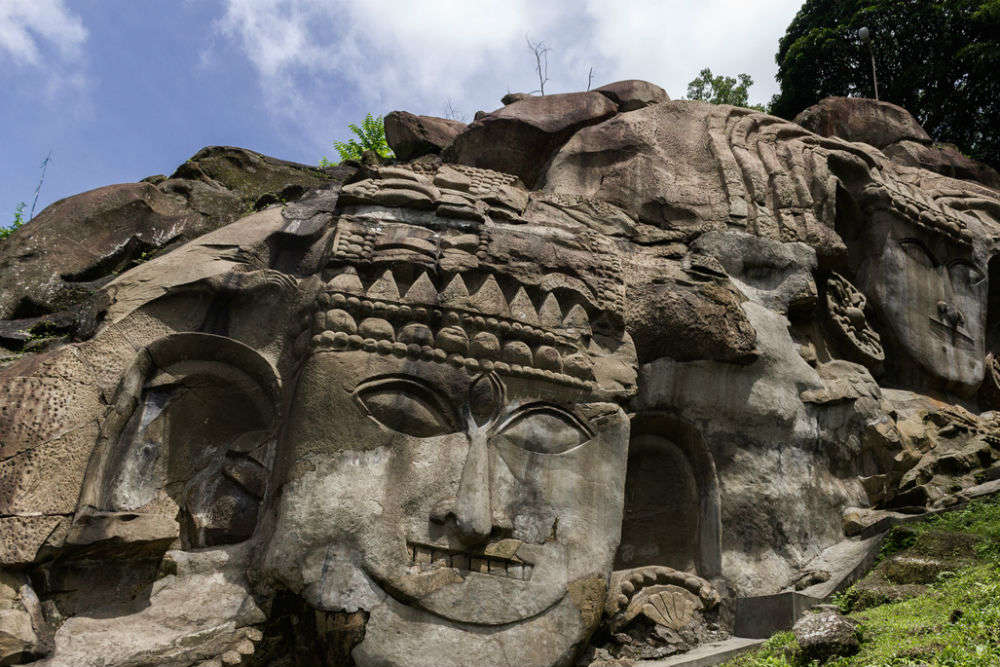
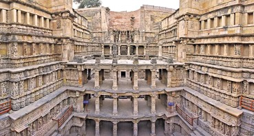
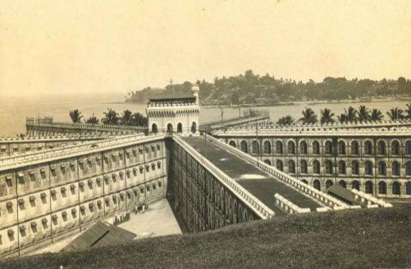

- The Lakshmi Vilas Palace in Gujarat, India, was constructed by the
Gaekwad family, who ruled the Baroda State.
- It is reputed to have been the
largest private dwelling built until that time, and four times the size of Buckingham Palace.
- At the time of construction, it boasted the most modern amenities such as elevators and
the interior is reminiscent of a large European country house.
- It remains the residence of the royal family, who continue to be held in high esteem by the residents of Baroda.
- Movies like Prem Rog in 1982,Dil Hi Toh Hai in 1993,Grand Masti in 2013 and Sardaar Singh in 2016 have been shot here.
- The Palace compound is of over 500 acres and houses a
number of buildings, particularly the LVP Banquets & Conventions, Moti Bagh
Palace and the Maharaja Fateh Singh Muesuem building.
|

- It is located in Tripura
- Unakoti is a hill from which the name of Unakoti District is derived.
- It hosts an ancient Shivite place of worship with huge rock reliefs celebrating Shiva.
- Unakoti literally means 'One Less Than A Crore'.
- According to Hindu mythology Lord Shiva once spent a night here enroute to Kashi.
He was accompanied by 99,99,999 gods and goddesses. He had asked his followers to wake up before sunrise and make their
way towards Kashi. Unfortunately, none woke up, except Lord Shiva himself. Before he set out for Kashi alone,
he put a curse on the others, turning them to stone and that is how the site got its name.
- The central Shiva head known as Unakotiswara Kal Bhairava is about 30 feet high including an
embroidered head-dress which itself is 10 feet high.
|

- Rani ki Vav or Ranki vav(literally meaning Queen's Stepwell) is a stepwell
situated in the town of Patan in Gujarat.
- It is located on the banks of Saraswati river.
- Silted over, it was rediscovered in the 1940s and restored in the 1980s
- It was listed as one of the UNESCO's World Heritage Sites since 2014.
- It was designed as an inverted temple highlighting the sanctity of water, the stepwell is divided into
seven levels of stairs with sculptural panels; more than 500 principal sculptures of Bhagwan Vishnu and over
1000 minor ones combine religious, mythological and Secular imagery.
- The ₹100 banknote of India, features Rani ki vav on the rear side.
|

- A fairly new piece of structure as compared to the rest, the Independence
Cellular Jail in Andaman Nicobar was better known as the 'Kala Pani'
- These solitary cells are found in Port Blair were used by the British
rulers to send the prisoners of the country in the 19th and 20th century.
- Many notable freedom fighters and activists, including Vinayak Damodar Savarkar, Batukeshwar
Dutt, Hare Krishna Konar, Yogendra Shukla, and Sudhanshu Dasgupta were imprisoned here
during the struggle for India's independence.
- These freedom fighters and activists were brutally tortured in this prison.
- Today, the complex serves as a national memorial monument.
- This was the second most dreaded prison of the world in its time of functioning under British India.
|